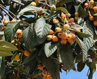

びわ（枇杷）の生産量
いちばん多くとれる都道府県
びわが日本でいちばん多くとれるのは長崎県です。697 tで、全国（2,180 t）の32%を占めます。

| 順位 | 都道府県 | 収穫量 | 全国に占める割合 |
|---|---|---|---|
| 1位 | 長崎県 | 697 t | 32% |
| 2位 | 千葉県 | 417 t | 19% |
| 3位 | 鹿児島県 | 159 t | 7.3% |
この数字について
- 分類：バラ科
- 全国の収穫量：2,180 t
- この数字が表すもの：収穫量（畑や田でとれた重さ）
- 調査：作物統計調査 作況調査（果樹） 令和6年産
- 8県分を調査（調査していない県は順位に入りません）